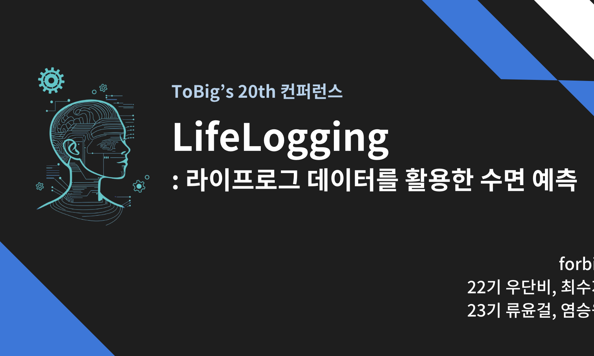
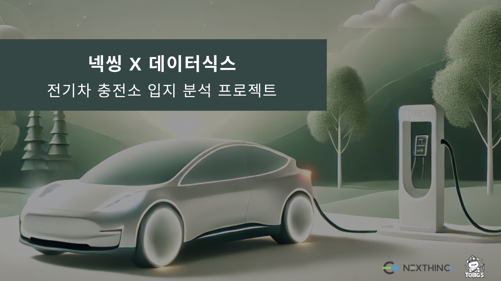

Featured Portfolio
(Click images to see details)
- All
- Data-Analysis
- Web-Application
- Others
동아리 및 학회 추천 사이트 (CA4U)
WEB-APPLICATION
Index Values 추정 및 예측모델
Data-Analysis

라이프로그 데이터를 활용한 수면 품질 및 상태 예측
Data-Analysis

(주)넥씽 전기차 충전소 입지분석
Data-Analysis
실시간 경제기사 요약 및 유사 기사 추천 시스템
Data-Analysis
코드 유사성 탐지 모델과 생성 모델 간의 적대적 상호작용 분석
Data-Analysis
승진여부 예측모델 케글대회
Data-Analysis
(주)넥씽 전기차 충전소 입지분석
주제명
(주)넥씽 전기차 충전소 입지분석 산학협력 프로젝트
회사 개요
전기차 충전 인프라 구축 및 운영 사업, 통합 플랫폼 운영
기간
2024.07 ~ 2024.12
코드
-
상세 내용
- 충전량(충전소 매출에 직접적인 영향)에 영향을 미치는 요인 탐색 및 영향력과 관계성 확인
- 객관적 지표 (지역별 주거/업무 단지 형태, 규모 등)에 기반한 충전량 예측 모델링